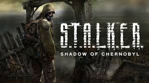
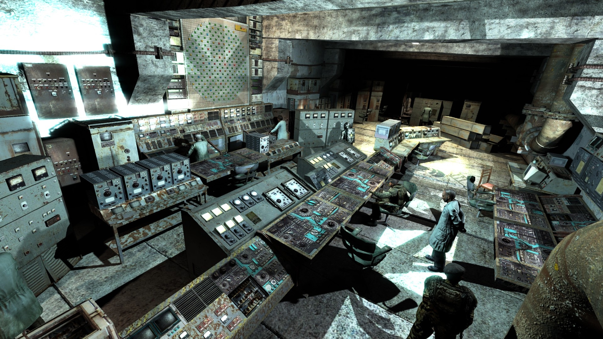
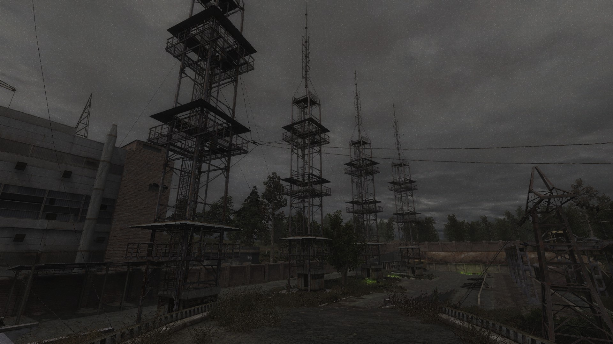

Перша гра в серії, випущена у 2007 році. Гравець виступає в ролі сталкера, який втратив пам'ять і намагається розкрити таємницю Зони.
Геймплей
Відкритий світ, динамічні бої, взаємодія з угрупуваннями та виживання серед аномалій і мутантів.

Ігровий опис та сюжет
S.T.A.L.K.E.R.: Тінь Чорнобиля — це перша частина культової серії, яка вперше відкрила гравцям світ Зони Відчуження. Події розгортаються в альтернативній реальності, де в Чорнобилі сталася друга катастрофа, яка породила аномальні явища, мутантів, артефакти та нову територію, що привернула увагу сталкерів — мисливців за артефактами. Гравець виступає в ролі Меченого — чоловіка без пам’яті, якого знаходять у вантажівці смерті з єдиною підказкою: "Вбити Стрілка". Поступово розкриваючи правду, гравець дізнається, що він сам — Стрілець, і є частиною таємного експерименту, спрямованого на контроль над людською свідомістю через ноосферу.
Особливості геймплею
Відкритий світ: унікальний постапокаліптичний простір з різними локаціями — від Кордону до Прип’яті, кожна з яких має свої загрози, ландшафти та сюрпризи.
Інтерактивне середовище: гравець взаємодіє з NPC, укладає союзи, виконує побічні завдання, впливає на перебіг сюжету.

Фрагмент з гри
Аномалії та артефакти: дивні зони, які викривляють фізику, спалюють, вибухають, але в них можна знайти артефакти з надприродними властивостями.
Мутанти: істоти, що виникли внаслідок мутацій — кровососи, снорки, псевдособаки, контролери — жахають і кидають виклик гравцю на кожному кроці.
Реалістична бойова система: зброя має зношування, реалістичну фізику, обмеження по боєприпасах, різні типи калібрів та броні.
Атмосфера та естетика
Один із головних козирів гри — її гнітюча, моторошна атмосфера. Мертві села, покинуті лабораторії, іржаві машини, гуркіт викидів і ледь чутні голоси в радіоефірі створюють неймовірну напругу. Гравець не лише бореться за життя, а й шукає сенс свого існування в світі, що втратив логіку. Сюжет балансує між науковою фантастикою, філософією та хоррором.

Атмосфера гри
Цікаві факти
Розробка гри тривала майже 7 років. Її декілька разів переносили через амбіційність проекту.
Локації відтворено за реальними супутниковими фото Чорнобильської зони.
Гра надихнула багатьох моддерів. Її спільнота — одна з найактивніших у світі.
Тінь Чорнобиля була продана накладом понад 2 мільйони копій і отримала звання "Культової гри" від багатьох критиків.